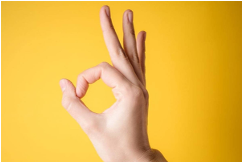
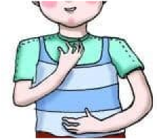
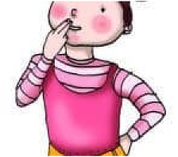
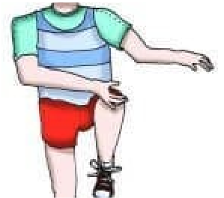
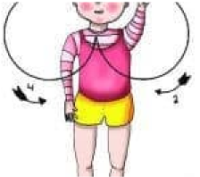
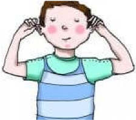
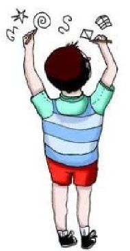
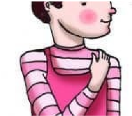

Abordamos una metodología didáctica por tareas que incorpora estrategias innovadoras sin olvidar lo mejor de las metodologías didácticas tradicionales. Aúna la motivación y la experimentación al planteamiento con rigor curricular de los contenidos. Cada unidad didáctica presenta a los niños y niñas una situación problema y les plantea un desafío, un reto motivador que permite que el propio alumno y alumna se interese y avance a lo largo del hilo educativo, sin perder interés por el desafío que supone la búsqueda de soluciones.
Cada reto pone en marcha una investigación, que se desarrolla a través de las secuencias didácticas, y que da lugar a un producto final. Además, es un reto que el niño o niña debe acometer con sus compañeros y compañeras de clase, lo que aumenta su interés y apoya su interacción social. Y, lo que es más importante, le identificará como parte de un grupo unido por una tarea común. Las actividades planteadas incorporan también en la investigación, de manera natural, las TIC.
Y, por último, otro aspecto importante de la metodología aplicada es la incorporación de diversas herramientas de evaluación para cada una de las fases de las tareas.
Por tanto, algunas de las características más destacables de la metodología didáctica que aplicamos son las siguientes:
- Rigor curricular
- Tareas motivadoras
- Contenidos globalizados
- Papel destacado de la experimentación y el juego
- Incorporación de diversas estrategias de pensamiento
- Protagonismo del alumnado en su propio aprendizaje
- Ayuda a la interacción incorporando diversos aprendizajes cooperativos
- Abierto a la participación de las familias (grupos interactivos, tertulias literarias dialógicas y talleres).
- Integración del desarrollo de la competencia digital
- Evaluación rigurosa, completa y práctica
- Desarrollo de la inteligencia emocional
- Prácticas de aula inclusivas
- Integración de los aprendizajes
- Estimulación de la capacidad de emprendimiento Materiales y recursos didácticos.
5.1 ESTRATEGIAS METODOLOGICAS:
En primer lugar, partimos de la convicción de que los procesos de aprendizaje en esta etapa dependen, en buena medida, de cómo se aprende. Y de que el aprendizaje es una actividad compartida, cooperativa y comunicativa en la que los niños y niñas, junto a sus profesores y profesoras y otras personas adultas cercanas, interpretan la realidad y la cultura y le otorgan significado, construyendo de esa forma, los conocimientos.
Por eso, en este segundo ciclo de Educación Infantil, el trabajo en el aula se basa en las actividades, en las experiencias, en lo cotidiano y, especialmente, en el juego, como eje vertebrador de la dinámica de la clase. El niño o la niña no siente que dentro del aula está haciendo algo completamente diferente a lo que hace fuera del colegio, de manera que vive el aprendizaje como una rutina más, enlazada con el resto de sus ocupaciones. Además, las actividades y tareas que planteamos en cada unidad didáctica están diseñadas para que los diversos estilos y ritmos de aprendizaje tengan cabida.
Se proponen actividades y tareas que requieren el uso de recursos variados y que relacionan los contenidos con situaciones de la vida cotidiana, y los de unas áreas con los de otras. Los niños y niñas aprenden jugando, construyendo, relacionando, probando, experimentando, practicando e interaccionando con el resto de la clase.
Los niños y niñas aprenden de forma global, interrelacionando experiencias, contenidos y sensaciones. Por ello, ponemos especial énfasis en organizar y secuenciar los contenidos desde un enfoque globalizador, que permita a los niños y a las niñas realizar aprendizajes significativos.
El aprendizaje, además, se ve estimulado por el ambiente de afecto y confianza que impregna la vida del aula y que potencia la autoestima de niños y niñas así como su desarrollo e integración social.
En base a todas estas consideraciones, basamos las estrategias metodológicas en los siguientes principios:
- Globalización: los niños y niñas abordan el proceso de aprendizaje de una forma global, en el que intervienen, de forma interrelacionada, aspectos cognitivos, expresivos, emocionales, etc. Es decir, nos acercamos a un contenido desde un enfoque integral, globalizador y diverso.
- Aprendizaje significativo: surge cuando el alumno o alumna establece relaciones entre los conocimientos previos y las experiencias que ya posee con lo que se ha de aprender. El aprendizaje significativo permite la integración de los conocimientos, posibilitando aplicar lo que se ha aprendido en una situación a otras situaciones diferentes y a otros contextos.
- Motivación: debemos destacar, como punto de inicio esencial, que un requisito ineludible de cualquier aprendizaje es que este resulte estimulante y
Con estos principios, aplicamos un método por tareas en el que cada unidad didáctica o reto se “presenta” ante el alumnado con una propuesta motivadora. Esta aventura les acerca a distintos conceptos del entorno y de sí mismos, y les permite desarrollar distintas habilidades y destrezas lógicas, de comunicación y sociales. Les convierte en investigadores activos en su propio desarrollo de aprendizaje, estimulándoles en cada uno de los retos que tienen que resolver, con ayuda del resto de compañeros y compañeras de la clase. Los niños y niñas investigan, por tanto, de forma cooperativa, globalizada e interdisciplinar.
Como otro elemento motivador más planteamos una vez al trimestre una tarea final de grupos interactivos o talleres.
En definitiva, cada unidad se planifica en una secuencia didáctica que se entreteje alrededor de una actividad motivadora inicial. A partir de esa pregunta o desafío se van enhebrando todos los contenidos curriculares relacionados, que se abordan desde distintos planteamientos metodológicos. De esta manera, el alumnado se convierte en el verdadero protagonista de su propio aprendizaje.
En este sentido, se incluyen como puntos clave del desarrollo curricular, las técnicas de aprendizaje cooperativo que se suceden en las fichas y que fomentan la participación activa y permiten establecer relaciones constructivas entre los escolares. Estas técnicas posibilitan que todo el alumnado participe, incidiendo en el respeto hacia las intervenciones de los demás y valorando la capacidad de colaboración de unos con otros.
Otro elemento de gran peso en cada reto es el trabajo con diferentes técnicas de construcción del pensamiento que activan la adquisición gradual de destrezas y hábitos mentales, y que trabajan la aplicación de procesos cognitivos diversos. Así, niños y niñas aprenden a relacionar, comparar, realizar inferencias, reflexionar, organizar y esquematizar la información, establecer sencillas relaciones causa y efecto, tener en cuenta los diversos factores que se relacionan con una idea o concepto, etc. También mejoran su capacidad para expresarse, de forma oral y corporal, y para atender y escuchar las experiencias y opiniones del resto de la clase.
A continuación, se detallan algunos enfoques metodológicos e ideas fundamentales que sustentan la práctica educativa durante este ciclo.
- Organización del tiempo
Un aspecto importante que no debemos olvidar, a la hora de organizar el tiempo diario, es que los niños y niñas de estas edades tienen su propio ritmo de maduración y aprendizaje y, por tanto, la organización temporal que establezcamos debe ser relativamente flexible. La distribución de la jornada debe hacerse de modo que haya tiempo para todo y para todos y todas. Además, en estas edades los cambios se producen de manera muy rápida y eso puede obligar a hacer modificaciones de los tiempos y los espacios planificados a lo largo del año.
Las rutinas proporcionan a los niños y niñas de Educación Infantil seguridad y estabilidad, pues constituyen un elemento organizador del día a día de la clase, en el que aprenden a desenvolverse y a situar sus acciones y las de los demás.
Organización temporal de las actividades
Como ya hemos visto, el tiempo escolar se debe organizar de manera flexible, incluyendo tiempos de descanso, de atención, de juego, de actividades libres, etc. Por eso, algunos aspectos que debemos tener en cuenta para la distribución temporal de las actividades son:
- Debe ser flexible: la planificación y el reparto temporal de la rutina de la clase no puede ser rígido y estricto, sino que debemos ser capaces de irlo adaptando según sea necesario.
- Debe garantizar el período de adaptación.
- Debe tener en cuenta la edad de los niños y niñas: ya que las necesidades son distintas según el curso. Por ejemplo, los niños y las niñas más pequeños necesitan más tiempo de descanso.
- Debe adaptarse a las necesidades de los niños y niñas: descanso, higiene, alimentación, etc. Y también ofrecer tiempo para la socialización, el juego y la comunicación.
- Debe establecer ciertas rutinas ya que eso ayuda a crear climas seguros y
- Debe tener en cuenta la diversidad: hay que fijar los tiempos teniendo en cuenta que no todos los niños y niñas tienen los mismos ritmos a la hora de realizar las tareas y, por ello, debemos establecer unos tiempos que permitan que la gran mayoría pueda terminar las actividades planteadas.
- Debe evitar la fatiga del alumnado: para lo cual se pueden intercalar actividades más relajadas o lúdicas entre aquellas que requieren más atención y concentración.
En esta planificación temporal hay que tener en cuenta la distribución de las actividades periódicas en el tiempo, como la música, el inglés, la relajación, etc. También tenemos que reservar algún tiempo a la semana para el desarrollo de talleres o experiencias de realización semanal o quincenal o de aquellas tareas excepcionales, como las que tienen que ver con las fiestas propias del trimestre o con alguna visita programada.
Por otra parte, debemos organizar temporalmente las actividades de refuerzo o de atención a la diversidad. En ese mismo sentido, podremos organizar tiempos de apoyo en aquellas tareas que hayan resultado difíciles o insuficientes en la metacognición de proceso o en la metacognición final, con el fin de afianzar los aprendizajes y habilidades necesarias.
- Técnicas de pensamiento
En el desarrollo del aprendizaje juegan un papel crucial las técnicas para enseñar y aprender a pensar: son técnicas que favorecen la adquisición gradual de destrezas y hábitos mentales.
Nuestra tarea como docentes es mediar para que los niños y niñas construyan los contenidos de manera personal y para que sean capaces de transferirlos desde el colegio a la vida familiar y social, y a la inversa. Se trata de enseñar a pensar de una manera fundamentada, ordenada, eficaz y práctica, impulsando la madurez y la autonomía. Son procedimientos variados y complementarios en los que están implícitos los distintos modelos y procesos de construcción del pensamiento que pretendemos impulsar. Esa diversidad favorece el desarrollo de distintas capacidades y procesos cognitivos: reflexionar, plantear interrogantes, compartir experiencias, estructurar y organizar la información, simular situaciones, tener en cuenta los diversos factores que se relacionan con una idea o analizar las consecuencias de una situación, por ejemplo. Las principales técnicas de pensamiento que desarrollamos son las siguientes:
- Análisis asociativo: establecemos vínculos entre ideas o elementos a partir de una idea central.
- Consecuencias y resultado: observamos y reflexionamos sobre las consecuencias de nuestros actos o de los actos de los demás.
- Razonas, pones pegas, contestas, sintetizas: pedimos que justifiquen una opción, que se pongan en el lugar de otro, que intenten contestarle, que sinteticen. Esta técnica permite argumentar y defender las propias ideas, considerando posiciones contrarias que favorecen la reconstrucción del propio
- Torbellino de ideas: pensamos en una situación determinada y ponemos en común lo que sabemos, sentimos o imaginamos con respecto a esa situación. Después, valoramos las soluciones y las ideas propuestas.
- Entrevista: una situación simulada en la que un individuo o un grupo pregunta a un niño o niña que es el protagonista. Esta técnica trabaja el humor y la creatividad, y potencia el interés y la comunicación.
- Diálogo: Se plantea como una conversación, que obliga a empatizar, a jugar con el humor y la creatividad, y potencia el interés y la comunicación.
- Tablero de las historias: Partimos de un relato en un escenario y con unos personajes y, a partir de él, los niños y niñas lo completan o inventan uno nuevo.
- Escucha, escucha: pensamos y analizamos diversos sonidos. Se estimula el juego, la atención, la relación con los demás y la curiosidad.
- Cómo soy, cómo son: reflexionamos sobre la propia persona, sobre los rasgos e intereses propios. En este sentido, analizamos también lo que no nos sale bien y reflexionamos sobre cómo podemos mejorarlo. Y escuchamos y atendemos a los rasgos de los compañeros y compañeras. Esta técnica estimula el autoconocimiento y el conocimiento de los demás: características físicas, intereses, motivos, valores…
- Rastreador de problemas: se analizan situaciones de conflicto y se avanza en la solución de dichas situaciones y en el control de las emociones.
- Técnicas de aprendizaje cooperativo
El aprendizaje cooperativo hace referencia a un grupo de procedimientos de enseñanza que parten de la organización de la clase en pequeños grupos heterogéneos donde los alumnos y alumnas trabajan conjuntamente, de forma coordinada entre sí, para resolver tareas académicas y profundizar en su propio aprendizaje y en el de los demás.
De gran importancia en este ciclo educativo, las técnicas de aprendizaje cooperativo permiten que el propio alumnado se convierta en recurso para ir adquiriendo las fortalezas de los demás, generando interdependencia positiva dentro de un clima de aula favorable para establecer relaciones constructivas y equilibradas entre ellas y ellos.
La utilización de grupos heterogéneos, de rincones de trabajo y de situaciones de juego compartido permite que el alumnado vaya desarrollando habilidades sociales, regulando comportamientos agresivos y construyendo un conocimiento más ajustado sobre los demás y sobre las relaciones interpersonales. Este tipo de situaciones también resultan importantes a la hora de trabajar sobre las normas o los límites que permiten regular la convivencia.
El aprendizaje cooperativo está basado en dos presupuestos básicos:
- La participación activa del alumno o alumna en su proceso de
- La cooperación, la responsabilidad compartida y la ayuda mutua.
Hay que tener en cuenta que el aprendizaje cooperativo, no solo ofrece ventajas a la hora de maximizar las posibilidades de aprendizaje del alumnado, sino que también constituye una herramienta básica tanto para el desarrollo integral de la personalidad del alumno o alumna como para la mejora del clima escolar y la convivencia en las aulas.
En ese sentido, destacamos algunas de las ventajas que suponen la utilización de las técnicas de aprendizaje cooperativo en el aula:
- Creación de un clima en el aula que favorece el aprendizaje: estás técnicas se basan en dinámicas atractivas y motivadoras, que reducen la ansiedad del alumnado.
- Facilita la atención a la diversidad, proporcionando estrategias y recursos para la gestión de la heterogeneidad en el El profesor o profesoradispone de más tiempo para atender, de forma individualizada, a los alumnos con más necesidades y, además, estos alumnos y alumnas cuentan con la ayuda de sus compañeros.
- Incide en la educación en valores como la solidaridad, la cooperación, la convivencia, el diálogo y el respeto a la diferencia.
- Mejora la calidad de las interacciones dentro del grupo y con el profesor o profesora, propiciando también que el clima del aula sea más positivo.
- Fomenta la autonomía y la independencia ya que reduce la dependencia del alumnado con el docente.
- Permite la adecuación de los contenidos al nivel del alumnado: la interacción en grupo facilita la comprensión por parte de los niños y niñas de los contenidos curriculares.
- Promueve el desarrollo de destrezas de pensamiento crítico: el trabajo grupal pone en marcha una serie de destrezas como son la planificación y organización de la tarea, la toma de decisiones, la argumentación y defensa de posturas, la negociación de puntos de vista, la resolución de problemas…
- Favorece la integración y la comprensión
- Facilita el uso del lenguaje, potenciando su utilización y fortaleciendo la habilidad de escuchar y de opinar ya que la interacción es continua.
Sin embargo, debemos entender que el aprendizaje cooperativo no es sinónimo de trabajo en grupo. Para que estas técnicas cumplan esas funciones no basta con colocar a los alumnos y alumnas en grupos para que trabajen juntos. Esa agrupación, en sí misma, no constituye una situación cooperativa. Deben darse una serie de condiciones, que constituyen los elementos del aprendizaje cooperativo:
- Agrupamientos heterogéneos: en cuanto al género, la nacionalidad, las capacidades, los intereses, el tipo de madurez, etc. Debemos tener presente que el objetivo más importante de esta metodología es la inclusión del
- Interdependencia positiva: se concibe el éxito de la tarea como una meta que depende de todos los componentes del El esfuerzo de cada alumno y cada alumna propicia que él mismo aprenda además de beneficiar al resto de su equipo. Todos se necesitan y todos deben participar.
- Responsabilidad individual: cada miembro del equipo se responsabiliza de su parte del trabajo y de mejorar su rendimiento individual, evitando que unos se aprovechen del trabajo de otros.
- Igualdad de oportunidades para el éxito: todos deben estar en condiciones de alcanzar la tarea. Habrá que prever las medidas necesarias para que todos los miembros del equipo cuenten con la oportunidad de participar por igual. Este elemento garantiza la atención a la diversidad dentro del grupo.
- Interacción promotora cara a cara: se promueve el progreso de los demás a través de la ayuda recíproca, el apoyo y el estímulo de todos los miembros del grupo.
- Utilización de habilidades cooperativas: los niños y niñas tienen que aprender, además de los contenidos y procedimientos curriculares, las destrezas y habilidades cooperativas como: compartir materiales, pedir y dar ayuda, escuchar de manera activa, respetar el turno de palabra, etc.
- Procesamiento cognitivo de la información: procesamiento entre los niños de la información mediante la ayuda y el diálogo. Implica confrontación de puntos de vista distintos, explicaciones, interpretaciones en contexto, aclaración de dudas, formulación de ejemplos, etc.
- Evaluación grupal: identificar lo que se hace bien y lo que se debe mejorar en el trabajo grupal.
En general, los aprendizajes cooperativos se realizan en parejas o en grupos pequeños de cuatro niños y niñas, aunque en la mayoría de las técnicas hay momentos para el trabajo individual y momentos para el trabajo en grupo. Algunos agrupamientos duran entre unos minutos y una clase, mientras que otros se establecen para períodos más largos, encaminados a la planificación, desarrollo y finalización de una tarea o proyecto.
Los principales aprendizajes cooperativos que desarrollamos en las unidades didácticas son:
- Parejas de discusión: el profesorado plantea unas preguntas y las parejas discuten sobre ellas y buscan una solución.
- Lo que sé y lo que sabemos: el docente anuncia un tema y solicita al alumnado que dibuje lo que le sugiere. Después, por parejas, hacen un dibujo que tenga las aportaciones de los dos miembros. Finalmente se hace una puesta común en gran grupo.
- Folio giratorio: el docente entrega al grupo un folio en blanco en el que cada niño añade una parte al dibujo sobre un tema planteado.
- Sé mi profe: se trata de que el niño o niña que tenga dificultad en la realización de alguna actividad o tarea solicite la ayuda de otro compañero.
- El juego de las imágenes: el docente presenta unas imágenes sobre un tema. Por equipos hacen un dibujo con estas imágenes tratando de expresar la relación entre ellas.
- Lápices al centro: se crean pequeños grupos de alumnos y alumnas y se explica una pregunta planteada por el maestro. En ese momento dejan los lápices en el centro porque pueden hablar pero no dibujar. Después, cada uno coge su lápiz y dibuja la respuesta.
Para ir introduciendo todas estas técnicas de aprendizaje cooperativo antes debemos crear en la clase un clima que invite a la cooperación. Para ello, tenemos que fomentar esa cohesión de grupo y ayudar a crear lazos emocionales: el alumnado tiene que conocerse, confiar en los demás, establecer lazos afectivos, ser conscientes de que el trabajo en común es una buena forma de divertirse aprendiendo., etc.
Una vez conseguido, podemos ir introduciendo las diversas técnicas de manera gradual:
- En primer lugar empezamos con aprendizajes en parejas de manera esporádica, que trabajen técnicas simples y cortas (no superiores a 10 minutos), muy estructuradas y enfocadas a tareas muy concretas. Por ejemplo, técnicas que inviten a dialogar, a escuchar de manera activa, a compartir y a dar información de manera precisa, y, sobre todo, a iniciarse en el trabajo en grupo.
- Una vez que esta fase esté consolidada, pasamos a establecer grupos estables de unos cuatro alumnos y alumnas, con sesiones algo más largas. Al principio comenzamos con técnicas que se trabajan con parejas pero que, al final, establecen el consenso del equipo. Luego ya se introducen aprendizajes diseñados para equipos de cuatro. Estas técnicas ya incorporan la utilización de roles de trabajo.
- Se establece principalmente en los cursos de 4 y 5 años. Se forman grupos estables y aumenta el tiempo dedicado al trabajo cooperativo, alcanzando el 50 % de la sesión de clases. Se trabajan técnicas con más pasos y más elaborados, utilizando todos los roles, haciendo hincapié en habilidades de cooperación y ayuda más complejas, y en el establecimiento de pasos para resolver pacíficamente los conflictos.
A la hora de ir haciendo uso de las técnicas cooperativas, los docentes debemos tener en cuenta las siguientes pautas de actuación:
- Incorporar las técnicas de forma
- Describir con claridad y con precisión la tarea que se propone.
- Garantizar el disfrute en el aprendizaje, propiciando entre el alumnado relaciones de respeto mutuo, confianza y ayuda.
- Evaluar los trabajos del
- Elegir al azar unos cuantos grupos para que expongan en clase su
- Observar la interacción entre los alumnos y alumnas, y supervisar el desarrollo de la actividad dando apoyo a las parejas o a los grupos que lo necesiten.
- El juego en Educación Infantil
El juego es un elemento educativo de primer orden que permite que las niñas y niños se aproximen al conocimiento del entorno cercano, al pensamiento y a las emociones propias y de los demás. Por su carácter motivador, creativo y placentero, la actividad lúdica tiene una importancia clave en Educación Infantil.
El juego permite trabajar todos los contenidos curriculares y desempeña las siguientes funciones:
- Contribuye a la exploración y al descubrimiento.
- Facilita la socialización.
- Regula las tensiones del niño y de la niña.
- Favorece la estructura del lenguaje y del pensamiento.
- Proporciona disfrute y diversión.
- Ejerce una función relajante.
- Posibilita el aprendizaje significativo.
El juego es un recurso didáctico prioritario en estas edades porque, a través de él, los niños y las niñas observan, exploran, descubren, se comunican, se relacionan, etc., convirtiéndose, el juego, en el motor de todo el proceso de enseñanza-aprendizaje y en un recurso didáctico en todas las áreas del currículo de Educación Infantil.
El pedagogo Jean Piaget distingue tres tipos de juegos, en función de las diferentes modalidades, a lo largo del desarrollo evolutivo del niño y de la niña, y de acuerdo con sus etapas:
- Juego funcional o de ejercicio: consiste en repetir una acción por el placer de obtener un resultado.
- Juego simbólico: consiste en simular situaciones, objetos y
- Juego reglado: aquellos en los que se establecen diversas normas o
En las distintas unidades didácticas se trabajan estos tres tipos de juegos que favorecen el desarrollo sensorial y motor, estimulan la imaginación y la creatividad, mejoran la comprensión del entorno que les rodea y favorecen el desarrollo del lenguaje.
Y, además, son elementos socializadores, que enseñan a los niños y niñas a ganar y perder, a considerar a los compañeros y compañeras y a respetar unas normas. Por tanto, el juego como tal, en todas sus variantes, afecta al desarrollo afectivo, psicomotor, social, cognitivo y lingüístico, de ahí su importancia para un crecimiento global y armónico.
- Aproximación a la lectoescritura
En esta etapa se pretende que, progresivamente, niños y niñas descubran y exploren los usos de la lectura y la escritura, despertando y afianzando su interés por ambas. La utilización motivadora, funcional y significativa de la lectura y la escritura en el aula les lleva, con la intervención educativa pertinente, a iniciarse en el conocimiento de algunas propiedades del texto escrito, cuya adquisición se completará en la Educación Primaria.
El aprendizaje de la lectoescritura requiere introducir a los escolares, de forma gradual, en un sistema de códigos convencionales que les permita entender, interpretar y producir informaciones sencillas. Para conseguir este objetivo han de tenerse en cuenta las siguientes cuestiones:
- Se deben conocer las ideas previas que niños y niñas tienen sobre el lenguaje escrito para poder ayudarles según su grado de desarrollo, que será diferente para cada uno. Hay que tener claro que debe respetarse el ritmo individual de cada niño y de cada niña.
- Los textos deben estar presentes en el aula en los distintos formatos y tipos, tal y como están presentes en la vida: revistas, periódicos, folletos, cómics, recetas de cocina, cuentos, poemas, textos informativos…
- Se debe potenciar el interés por la lectura mediante la narración y la lectura de cuentos, poesías, canciones, relatos, etc., por parte del educador. Es importante fomentar una actitud positiva del alumnado frente al mensaje escrito. Se ha establecido un rincón de lectoescritura donde los alumnos y alumnas puedan realizar actividades y juegos relacionados con esos aprendizajes. En ese espacio debe apoyarse a aquellos niños y niñas que presenten más dificultades.
- Anticipar el contenido interpretando con el título y las ilustraciones de qué tratará la historia.
- Progresar en su motricidad fina mediante la realización de trazos de distinto tipo y los grafismos de preparación a la escritura.
- Iniciación al conocimiento del código escrito mediante el reconocimiento de su propio nombre, el de los compañeros y de palabras y letras que surgen en clase.
- Además los niños y niñas están aprendiendo a usar la biblioteca del centro. Ya que además de contar con la biblioteca de aula que utilizamos a diario en el rincón o en la asamblea, también visitamos la biblioteca del centro para disfrutar de la lectura de un cuento y nos explican sus funciones y como podemos sacar libros.
Nuestros materiales:
Las unidades didácticas se acompañan de lecturas que ofrecen una gran variación de tipologías textuales: cuentos de la biblioteca o con ayuda de las familias que nos traen cuentos relacionados con la unidad, desplegables, para crear historias a partir de imágenes…; libros de adivinanzas, de poesías, de canciones, de juegos, de recetas, de arte…
En muchos casos esa lectura presenta también un elemento motivador, como son fichas de lupa para descubrir el objeto oculto, imágenes para construir los propios cuentos, imágenes para construir frases, trabajar el género, etc. De esta forma se produce el acercamiento al lenguaje escrito de una forma motivadora y funcional
La potenciación de la lectura y la expresión escrita es un aspecto fundamental que se trabaja ampliamente en las fichas de cada unidad, a través de diferentes tareas, actividades y proyectos. En las diferentes unidades de programación se detallan los recursos y metodologías utilizados para aproximar a los niños y niñas al lenguaje escrito.
- Observación y experimentación
La observación y la experimentación constituyen dos medios eficaces para que los alumnos, en estos primeros años de educación, se descubran a sí mismos y comprendan su entorno cercano. Los niños y niñas de estas edades aprenden haciendo, en un proceso que requiere observación, manipulación, experimentación y reflexión.
Es a través de la experimentación y la observación, directa o indirecta, y también del juego, como el niño o la niña descubre las propiedades de los objetos, establece relaciones, etc., es decir, pone en funcionamiento sus propias estructuras cognitivas. Esto requiere de un ambiente estimulador que ayude al alumnado a aprender a aprender, a ser verdadero partícipe, a descubrir actuando, observando, investigando y jugando.
Los niños y niñas observan el medio que les rodea y lo exploran a través de sus sentidos: se mueven, buscan, tocan, prueban, juegan... Como educadores, tenemos que aprovechar esa capacidad para dirigir una observación sistemática y proponer actividades que ofrezcan a los niños y las niñas oportunidades para manipular el entorno inmediato. Esto les permite reflexionar e interpretar hechos y fenómenos de la vida cotidiana y, a partir de ahí, van construyendo conocimientos sobre la realidad.
En ese sentido, las unidades didácticas que trabajamos en esta etapa parten de una situación motivadora para que el niño o la niña sientan curiosidad por observar y alcanzar una comprensión de la realidad cercana. Con ese fin, se ofrecen una serie de actividades, experiencias y tareas variadas que permiten al alumnado explorar, observar, manipular y experimentar. En definitiva, interactuar con la realidad cercana como vía para comprenderla.
- Criterios para el agrupamiento de alumnos y organización espacial
En primer lugar, el diseño del espacio escolar estará en función de las necesidades, intereses y características psicopedagógicas de los alumnos.
Además de cubrir esas necesidades de los niños y las niñas de la clase, la organización de los espacios del aula debe tener en cuenta los siguientes criterios:
- Orientar el diseño de unos ambientes estimulantes, seguros y educativos.
- Ofrecer espacios y recursos para que los niños y las niñas puedan realizar distintos juegos y actividades en gran grupo, en pequeños grupos e
- Facilitar la introducción o retirada de materiales de los distintos espacios para adecuarlos a las actividades que se vayan a realizar, y a las técnicas de aprendizaje cooperativo.
- Facilitar el uso de material y el espacio adecuado para la realización de actividades plásticas creativas y sugerentes y para la realización de determinados talleres.
- Contribuir a que el trabajo de los profesores y las profesoras sea más fácil y eficaz, más ameno y estimulante.
- Facilitar la planificación y preparación de los proyectos finales que se plantean en cada unidad didáctica.
No cabe duda de que la organización espacial no puede ser estática a lo largo de todo el curso, sino que los distintos espacios del aula deben ir evolucionando para adaptarse a las necesidades de los niños y las niñas, para incorporar nuevas propuestas, experimentos y proyectos, para adaptarse a los cambios estacionales, etc.
Como hemos señalado, el aula debe ofrecer espacios para que podamos trabajar con distintos tipos de agrupamiento. En los distintos retos vamos a utilizar los siguientes:
- Individuales: que nos permiten observar a cada niño y cada niña individualmente, examinar cómo progresa en las distintas tareas, las dificultades que encuentra en las actividades individuales, así como constatar la autonomía e independencia con que las realiza.
- Agrupamientos en pareja o pequeño grupo: los agrupamientos sistemáticos y heterogéneos permiten las interacciones esporádicas entre el alumnado para compartir material, ideas, ayuda mutua,… Y se realizan especialmente en aquellas actividades que requieren una distribución de tareas para llegar a un fin común, como en la confección de murales y en la realización del proyecto final de cada reto. Estos agrupamientos también posibilitan la aplicación de las técnicas de aprendizaje cooperativo propuestas en las fichas y potencian las habilidades sociales y comunicativas de los niños y niñas. Además, nos permiten detectar cómo cada niño y cada niña se relaciona e interactúa con sus compañeros y compañeras, manteniendo las normas sociales de respeto y ayuda hacia los demás.
- Agrupamientos en gran grupo: resultan esenciales en determinadas tareas, por ejemplo, los diálogos generales, los debates entre todo el alumnado, las actividades audiovisuales, en determinados juegos, en bailes y canciones, en dramatizaciones o en la técnica de pensamiento de torbellino de ideas. Permiten detectar cómo funciona el grupo clase en conjunto.
Establecemos en el aula rincones de trabajo específicos para:
- Rincón del juego simbólico en 3,4 y 5 años.
- Rincón de grafomotricidad para 3 y 4 años.
- Rincón de plástica o artístico en 3,4 y 5 años.
- Rincón de lectoescritura para 5 años.
- Rincón de lógico matemática en 3,4 y 5 años.
- Rincón emociones en 3, 4 y 5 años.
- Rincón de las TICs( tabletas) en 3,4 y 5 años.
8. Tecnologías de la información y la comunicación (TIC)
Las TIC están presentes en la vida infantil y su uso en el aula es una mera prolongación de la realidad en la que los niños y las niñas se ven inmersos. Los alumnos y alumnas interactúan con los ordenadores y los dispositivos inalámbricos conectados a Internet de manera habitual y ya han pasado a formar parte de su realidad cotidiana. En ese sentido, es importante que la escuela crezca en sintonía con la sociedad actual, porque así conseguiremos un equilibrio entre el aprendi- zaje informal de los alumnos y alumnas fuera del entorno educativo y el aprendizaje formal adquirido en la escuela. Por ello, debemos iniciar a los niños y niñas en las tecnologías de la información y la comunicación adaptando las maneras de enseñar-aprender y de evaluar, incorporando nuevos procedimientos, materiales, destrezas, habilidades y competencias.
Además, el uso de las TIC en el aula puede ofrecernos interesantes posibilidades didácticas:
- Potenciar un doble tipo de aprendizaje: por un lado, un aprendizaje más individualizado, atendiendo a la diversidad y, por otro, un aprendizaje colectivo y colaborativo.
- Transformar la dinámica del aula: la aplicación de estas tecnologías aumenta la interactividad de los alumnos y alumnas, y aumenta la motivación de los mismos en su aprendizaje.
En ese sentido, en la etapa de Educación Infantil se trabaja en dos aspectos:
- El uso correcto y seguro de diferentes dispositivos y periféricos.
- Las pautas para una ciudadanía digital responsable y segura.
Es fundamental que el alumnado aprenda a utilizar de manera correcta, responsable y saludable los diferentes dispositivos electrónicos (PDI, PC, tableta, teléfono móvil...) y que el centro educativo posibilite su uso en diferentes actividades de aprendizaje. Por último, es necesario empezar a inculcar en el alumnado algunas pautas de ciudadanía digital responsable en colaboración con las familias.
Materiales con los que trabajamos las tics:
Para englobar todos esos aspectos, las unidades didácticas se complementan con una serie de recursos innovadores que encaminan al alumnado hacia una nueva forma de aprender y que están adaptados a la nueva realidad de aprendizaje de los niños y las niñas.
- Vídeos para exponer determinados contenidos de manera motivadora y
- Fichas del alumnado: con finalidad expositiva, para proyectar en el
- Actividades interactivas: para poner en juego los conceptos básicos, así como ejercitar destrezas digitales esenciales para el manejo de los dispositivos electrónicos (ordenador, tableta o pizarra digital interactiva).
- Canciones y actividades específicas para el área de Música.
- Taller TIC: uso de tabletas a través de un rincón
- Murales digitales: ( pizarra digital) incluyen una actividad interactiva en la que hay que señalar elementos en el mural del aula según las instrucciones en audio, y una presentación interactiva en la que se presenta un esquema radial con iconos y leyendas que sirve como mapa de pensamiento de la unidad.
6.2 Percepción visual.
Las actividades de percepción visual fomentan la discriminación visual y la percepción de diferencias, estimulando tanto la atención como la percepción del niño/a en la etapa de Educación Infantil. El estímulo de estos aspectos en edades tempranas previene la aparición de problemas más adelante y ayuda a desarrollar la concentración.
Las tareas que trabajaremos se centran principalmente en la estimulación de la atención, la discriminación visual, la percepción de diferencias y la orientación espacial. Asimismo, se trabajan la atención, la planificación, el control y la concentración. El fin es ayudar al alumno en su desarrollo cognitivo que supondrá una mayor capacidad de interacción con el entorno y de conocimiento de sí mismo.
Vamos a trabajar para ello actividades como:
- Atención:
- Encontrar las diferencias en dos láminas.
- Buscar
- Realización de
- Colorear mándalas.
- Completar las
- Discriminación visual:
- Juegos de
- ¿Qué sobra en las imágenes? Buscar modelo
- Sudoku
- Percepción de diferencias:
- Buscar
- Buscar las diferencias en dos cuadros
- Completar la imagen
- Orientación espacial:
- Juegos de lateralidad: (arriba-abajo, izquierda-derecha, delante-detrás…)
- Simetrías
- Los 20 aros
- Circuitos
6.2 ¿CÓMO DESARROLLAMOS LA GRAFOMOTRICIDAD?
La grafomotricidad es un término referido al movimiento gráfico realizado con la mano al escribir. El objetivo de la grafomotricidad en la Educación Infantil es que el niño o niña adquiera las habilidades necesarias para que llegue a expresarse por medio de signos escritos.
- La Psicomotricidad Gruesa y Fina
Las bases fundamentales para una buena adquisición de la grafomotricidad, es el progresivo desarrollo de la psicomotricidad gruesa (lateralidad, equilibrio, coordinación, esquema corporal…) y, sobre todo, de la psicomotricidad fina. Está comprobado que existe una relación directa entre el desarrollo motor de un alumno o alumna y su escritura. Es por ello, previamente a su puesta en práctica, es conveniente realizar juegos y actividades motrices para desarrollar la destreza de los brazos, las manos y de los dedos, así como la coordinación visomanual.
Juegos motrices para desarrollar la destreza en los brazos:
- Acostados en el suelo con los brazos un poco separados del cuerpo levantar y dejar caer los brazos relajadamente.
- Con las manos encima del pecho, una encima de otra, levantar los
- Poner los brazos en cruz con las palmas de las manos apoyadas en el suelo y arrastrarlas hasta pegarlas al cuerpo.
- Estirar los brazos fuertemente hacia arriba, bajarlos y “dejarlos descansar”.
- Con los brazos en cruz, levantarlos unos 10 centímetros del suelo alternándolos, y a continuación descansar.
Juegos motrices para desarrollar la destreza en las manos:
- Abrir y cerrar las manos a la vez, primero despacio y luego más de
- Abrir y cerrarlas alternativamente (al principio muy despacio).
- Con la mano dominante cerrar el puño encima de la mesa e ir sacando los dedos uno a uno.
- Poner una palma pegada a la otra y hacer círculos sin “despegarlas” en distintas direcciones.
- Con los dedos entrelazados y frotando la palma de las manos, moverlas para dentro y para fuera sin que los dedos dejen de estar entrelazados. Terminarlos sacudiendo las manos para relajarlas.
- Tocar palmas, primero libremente, después siguiendo un
- Llevar uno o más objetos en equilibrio en la palma de la mano, primero en una mano, después en las dos.
- Realizar gestos con las manos acompañando a canciones
- Girar las manos, primero con los puños cerrados, después con los dedos
- Imitar con las manos movimientos de animales (león moviendo las garras, pájaro volando…) o de objetos (aspas del molino, hélices de helicóptero.
Juegos motrices para desarrollar la destreza de los dedos:
- Tocar el tambor o teclear con los dedos sobre la mesa, aumentando la
- Con la mano cerrada, sacar los dedos uno detrás de otro, empezando por el meñique.
- Con las dos manos sobre la mesa levantar los dedos uno detrás de otro, empezando por los meñiques.
- Con la mano estirada sobre la mesa y los dedos juntos, ir separándolos uno a uno con la ayuda de la otra mano mientras sea necesario.
- Levantar los dedos de la mesa uno a uno, primero con ayuda hasta que pueda hacerse sin ella.
- Arrastrar la mano o arrastrar uno, dos, tres… dedos por una superficie lisa, rugosa, con arena, sobre diferentes tipos de papel, madera…, sensibilizando las yemas de los dedos.
- Tocar los diferentes dedos de la mano con el dedo pulgar de esa mano por orden y empezando por el meñique.
- “Andar” con la palma de la mano (como los elefantes) ejerciendo presión sobre la superficie o con las cinco puntas de los dedos (como las los gatos)
Juegos motrices para desarrollar la coordinación visomanual:
- Lanzar objetos, tanto con una como con otra mano, intentando dar en el blanco (caja, papelera…).
- Enroscar y desenroscar tapas, botes, tuercas…
- Ensartar un cordón en planchas y/o bolas
- Abrochar y desabrochar
- Encajar y desencajar
- Modelar con plastilina bolas, cilindros…
- Pasar las hojas de un
- Picado con punzón, primero libremente y después en puntos
- Rasgar papeles, primero libremente y después siguiendo una guía
- Recortar con tijeras…
- La Experiencia de Aprendizaje de los Trazos
Otro aspecto importante es la realización de juegos y actividades para desarrollar los trazos. Teniendo en cuenta la maduración y el desarrollo del esquema corporal del niño y niña, se ofrecerán oportunidades lúdicas de aprendizajes, experiencias y tareas en las que se presenten los trazos de menor a mayor nivel de complejidad.
Indicaciones a tener en cuenta:
- Los trazos deben realizarse en sentido izquierda-
- Los movimientos básicos presentes en los diferentes trazos grafomotores son de dos tipos: rectilíneos y curvos. Así pues, presentaremos trazos verticales, horizontales, diagonales, curvos, angulares, circulares, cruces, aspas, hélices, etc.
- Antes de trabajar con un lápiz y un papel es recomendable que el niño o niña comience realizando otras experiencias previas.
Secuenciación de las experiencias para desarrollar el trazo:
- 1º EL AIRE. Es el espacio perfecto para iniciar la grafomotricidad, ya que este “formato” no está acotado ni tiene límites. Con nuestro “dedo mágico” y verbalizando nuestra acción, los niños y niñas realizarán el movimiento, en un primer lugar imitándolo, para posteriormente realizarlo sin ayuda. Puede "borrar" y hacerlo de nuevo cada vez que quiera.
- 2º EL SUELO. Es el lugar más cercano y explorado por el niño o niña, por lo que lo convierte en un espacio ideal para “jugar a trazar”. Para ello ofreceremos experiencias como:
- En el exterior, en la arena con el dedo, después con un
- A través de juguetes como por ejemplo con un “cochecito”, lo conduciremos por una carretera trazada.
- Sobre cinta adhesiva, primero con los pies caminando siguiendo la línea, después con el dedo.
- 3º LA “PARED”. Sobre grandes formatos de papel vertical con pintura dedos, ceras, etc. La pizarra, tanto tradicional como la pizarra digital son potentes recursos para los trazos si sabemos utilizarlos bien. Así pues:
- Borrar trazos con el dedo realizados con
- Realizar con el dedo trazos
- 4º LA MESA. Una vez practicados los pasos anteriores, pasamos a planos horizontales y acotados donde los niños y niñas pueden experimentar aún más los trazos antes de pasar al papel:
- Sobre una bandeja con harina, con el dedo y un
- Practicando con plastilina, inicialmente haciendo un churrito y posteriormente torneándolo
- En plantillas plastificadas con rotuladores
- Sobre papel, inicialmente con el dedo, posteriormente con el lápiz, y en último lugar repasamos con un rotulador. Así pues, pueden ser plantillas primero con puntitos en las que el niño y niña siga el trazo, con dos puntos que debe unir, seguimiento de pautas o caminos sin tocar las paredes…
- Hábitos Posturales
¿Cuántas veces hemos visto a niños y niñas, pasados ya los años de Infantil, escribir con una tensión constante en el cuerpo, en los hombros, brazos, mano, dedos…? Es por ello que también debemos cuidar los hábitos posturales en el aula, sin olvidarnos de la importancia de crear un hábito adecuado para la sujeción correcta del lápiz con los dedos, ya que ambos, también inciden en el aprendizaje de la escritura.
¿Cómo sentarse?
Una vez que nuestro alumnado ha experimentado múltiples posibilidades de aprendizajes del trazo en formatos y espacios de mayores dimensiones, les indicaremos poco a poco cómo deben sentarse. Lo ideal es colocar las piernas perpendiculares a la mesa y con la espalda apoyada en el respaldo de la silla, a una determinada distancia de la mesa y los pies en el suelo, el antebrazo también apoyado en la mesa no demasiado alejado del tronco.
¿Cómo coger el lápiz?
Enseñar al niño o niña a sujetar correctamente el lápiz, sostenerlo entre los dedos e ir deslizándolo sobre el papel, es fundamental. Nuestro Ciclo de Infantil sigue los siguientes pasos claves para que nuestros alumnos y alumnas aprendan a coger bien el lápiz:
1.- Empezamos por la ejecución de un “Gesto Mágico” con la mano que normalmente utiliza cada alumno/a para dibujar. En la posición de partida, el pulgar, el índice y el dedo medio quedan distendidos, y el anular y el meñique flexionados sobre la palma.

2.- Se coloca el lápiz en el “Valle Encantado”, la zona entre el pulgar y el índice.
3.- A continuación, se hace deslizar el lápiz en este valle para que “Suene el Violín”. Este rozamiento hace que el niño note la posición correcta de desplazamiento del lápiz.
4.- Se cierran los tres dedos (pulgar, índice y medio) como “las fauces de un león”, de modo delicado, poniendo las yemas sobre las caras del lápiz y haciéndolas resbalar hacia la punta, hasta llegar a dos dedos de la punta.
No presionar al niño o niña es fundamental, ya que el proceso de escritura abarca varios años, desarrollándose en función del propio ritmo de aprendizaje de cada niño o niña.
6.3 Memoria visual.
Se llama memoria visual a la capacidad de recordar imágenes, palabras, frases u objetos con la memoria a corto plazo. Es decir, las imágenes se presentan en un periodo corto de tiempo (4 o 5 segundos) para luego poder recordar dicha imagen, secuencia, palabra sin la presencia de esta. La falta de memoria visual en los niños puede traer consecuencias en el aprendizaje.
- Características de un niño que tiene dificultad en la memoria visual
- Se equivoca mientras lee (confunde las palabras).
- Tienen dificultades para copiar lo que se escribe en la pizarra, aprender las letras o los números.
- Le cuesta localizar
- Tiene dificultad para seguir
La memoria secuencial del orden de las letras en palabras y el orden de las palabras en una secuencia son importantes para la lectura y la ortografía.
- ¿Cómo mejorar la memoria visual en los niños?
- Juegos de memoria, por ejemplo: encontrar parejas con barajas de cartas, juegos de memoria en el ordenador o tablet. Estos juegos con cartas o fichas ayudan a ejercitar la memoria visual puesto que, necesitamos hacer un esfuerzo mental y recordar donde se encuentra la pareja de la ficha.
- Completar una imagen. Esta actividad consiste en brindarle al niño un dibujo Luego de unos segundos (4-5 segundos) quitarle esta imagen y colocar frente a él, el dibujo incompleto de la misma imagen .La idea es que el niño ejercite su memoria visual y realice un esfuerzo para recordar qué partes faltan en el último dibujo.
- Hablar sobre un objeto determinado. La actividad consiste en mostrarle un objeto a un niño. Dejar que él observe sus características y luego hablar sobre ello. A continuación se quita el objeto de su vista y se intenta hablar del objeto y de las características que el niño recuerda respecto del
- El juego de las imágenes iguales-diferentes. El juego de los errores. Encuentra las diferencias. Mostrar al niño dos imágenes similares y pedirle que nombre lo que no se encuentra en una de las imágenes.
- Juego de parejas. Con objetos, formas, letras o
- Juegos de observación espontanea. Pedir al niño que se tape los ojos y pedirle que recuerde, por ejemplo, ¿qué ropa estamos llevando? ¿qué hay escrito o dibujado en la pizarra?
- Paseos de observación. Luego de un paseo breve, se le pide al niño que recuerde 4 cosas (objetos o personas) que se haya cruzado. Identificar, señalar o describir objetos, conceptos, acciones o situaciones durante el paseo. Hay que pedirle que intente describir los objetos o personas.
- La imitación en la pizarra. Se utiliza una pizarra, un papel para hacer un dibujo o figura geométrica. Luego se borra o tapa, y se le pide al niño que intente copiar el dibujo que se ha borrado/tapado recientemente usando su memoria, aumentando gradualmente la dificultad de formas.
- Los objetos sobre la mesa. Prepara una mesa con varios objetos familiares y pide al niño que los observe y recuerde. Cubrir los objetos con un trapo y preguntar que hay sobre la mesa. Quitar uno y preguntar cuál falta.
- Vistazo rápido a un libro. Abrir un libro preferiblemente con imágenes por una página determinada y pedir al niño que la observe durante unos segundos. Cerrar el libro y pedir al niño encontrar la página correcta.
- Juego de ortografía. Mira, cubre, recuerda, escribe,
Estrategias
- Escribir listas cortas, por ejemplo, de los pasos necesarios para hacer algo.
- Clasificación. Colocar los objetos similares en un mismo
- Seriación. Organizar la información en una secuencia
- Seleccionar palabras a recordar de una historia o
- Ganchos de Hacer reglas de memoria con significado, por ejemplo, una «u» puede atrapar la lluvia como una taza.
Memoria secuencial VISUAL
La memoria secuencial es la capacidad de recordar el orden de los objetos y eventos.
Actividades
- Organizar una secuencia de objetos, por ejemplo, cuchara cuchillo tenedor en orden de tamaño, de pequeñas a grandes. A continuación mezclar la secuencia y pedir al niño organizarlos de nuevo.
- ¿Qué ocurre después? Hacer con historietas, comics o «tarjetas de secuencia ‘de situaciones cotidianas y pedir al niño a ordenar en el orden
- Recordar la secuencia de los días de la semana usando palabras magnéticas, cartulinas, etc.
- Recordar la secuencia de los números 1-
- Recordar la secuencia del alfabeto, usando letras magnéticas o
- Recordar la secuencia de una serie de tres a cuatro formas
- Secuencias de bloques. Patrones con cuentas de colores, formas con macarrones. Pedir al niño para copiar el diseño o secuencias, la clasificación en dificultades
- Juegos de mimos. Actuar en secuencias, por ejemplo como hacer una taza de café.
- Secuencias de movimiento o de bolas. Por ejemplo, salto, salto, atrapar pelota, botar, lanzar al aire y aplaudir y luego coger.
- Ritmos aplaudiendo. Pedir a un niño que copie una secuencia que hacemos
- Juego de ‘el ahorcado’ o juego scrabble
- Ayuda para Escribir palabras parcialmente y pedir al niño que las complete. Hacer palabras con plastilina o papel. A algunos niños les ayuda a recordar el cantar el deletreo de las palabras.
6.4 Ejercicios madurez neurológica.
En al ámbito sensorial: “No hay nada en la mente que antes no haya estado en los sentidos”, afirmó Comenio hace muchos años. Con el avance de las Neurociencias, estamos entendiendo de manera más clara cómo se da el proceso de desarrollo cerebral y la importancia de la información sensorial para la construcción del conocimiento.
Todos los niños y niñas tienen conocimiento de sí mismos y del mundo que los rodea utilizando sus sentidos. Los órganos responsables de captar la información del medio donde crecen y se desarrollan nuestros pequeños, son bombardeados, segundo tras segundo por diferentes estímulos. El cerebro, quien se encarga de seleccionar la información, limita la entrada de las sensaciones, elige, decodifica y transmite a diferentes zonas cerebrales y al cuerpo en sí, aquello que potencialmente le es más útil, valorando las informaciones más importantes o más llamativas, o más olorosas, o que involucren más emociones, etc. No necesitamos ejemplos para demostrar que lo que realmente sabemos fue construido por las más diversas informaciones recibidas a través de nuestros canales sensoriales, que no solo nos permiten tener un conocimiento específico sino también nos permiten sensibilizarnos ante diferentes fenómenos o situaciones de la vida diaria, dando sentido a lo sentido, por ejemplo lo que escuchamos.
Los niños y niñas son altamente sensoriales, gracias a una sabia naturaleza que les facilita el conocimiento del entorno y de sí mismos. La información sensorial es absolutamente esencial para el comienzo y desarrollo de las funciones mentales en el niño, porque la actividad cerebral depende esencialmente de los estímulos sensoriales, no sólo al nacer, sino también toda su vida”.
El programa de desarrollo neuromotor es un programa de actividades neuromotoras, o de ejercicios físicos que estimulan la organización neurológica y la excelencia física de los niños. Toda la información que recibe el cerebro llega por medio de las vías sensoriales. La información es almacenada por un corto periodo de tiempo en el sistema sensorio-perceptivo, enseguida el cerebro la decodifica y en un lapso de segundos emite la respuesta motora. Sin embargo, la educación sensorial suele quedar en un segundo plano, dando por hecho que los sentidos se van a desarrollar por la propia existencia. Pero cometemos el error de no fomentar actividades sensoriales desde edades tempranas, pensando que este desarrollo no requiere ninguna estimulación educativa, ya que la educación sensorial está en la base de una correcta estimulación y sólida educación.
Podemos aprovechar cuando salimos al aire libre, los paseos y escapadas a la naturaleza con los niños se convierten en perfectas oportunidades. La montaña, el río, un merendero, hay multitud de opciones para disfrutar de colores, olores y sonidos. Por eso os proponemos diversos juegos que podéis poner en práctica para educar los sentidos en la naturaleza y fomentar además la inteligencia naturalista.
El Tacto
Es el sentido que utiliza el niño para explorar su entorno a través de sus primeros juegos, y lo coordina con la vista. ¿Cómo educar el tacto en el medio natural? Con juegos sensoriales. Vamos a recoger un puñado de palos, ramas, piedras, hojas, todo aquello que tengas disponible en el campo.
En función de la edad podemos:
- Clasificar en función de la forma, palos, piedras y hojas (18 – 32 meses). Podemos añadir dificultad tapando los ojos, o clasificando por rugoso-liso (a partir de los 24 meses)
- Escoger 4 elementos del campo (piedras, palos y hojas) y colocarlas en determinado orden. Tras tocarlas detenidamente, mezclarlas e intentaremos volver a colocarlas en el mismo orden recordando en qué orden habíamos tocado (a partir de los 32 meses). También podemos hacerlo, para añadir dificultad, con los ojos tapados, añadiendo más piezas, o haciendo el juego pero con piezas del mismo elemento (4 palos o 4 piedras por ejemplo), vamos aumentando y regulando la dificultad del juego en función de la edad.
La Vista
Es el sentido más desarrollado. En la estimulación de este sentido debemos tener en cuenta que en los juegos visuales se debe incluir la educación del sentido cromático. Este sentido conecta con el resto de sentidos proporcionándoles un conocimiento explícito de los objetos y elementos. Algunas opciones de juego serían:
- Describimos lo que nos rodea con detalles, como si de una postal se A medida que crecen indicamos más detalles y colores, como la flor blanca y amarilla, las piedras del río, la forma de las nubes, etc. Además así desarrollamos el vocabulario específico y como con todos los juegos en la naturaleza, fomentamos la inteligencia naturalista (desde los 0 meses)
- Si de casa llevamos varias fichas de cartulina de pequeño-mediano tamaño con diferentes gamas de cada color, podemos jugar a observar de qué color es el cielo, el agua, las nubes, la hierba, etc. e indicar qué color o gama de cada color le corresponde ( a partir de los 24 meses)
- Observar lo que nos rodea detenidamente contando qué cantidad hay de cada elemento que observamos. Posteriormente, con los ojos tapados, enumerar los elementos y la cantidad de ellos que se recuerdan. Podremos taparles los ojos e intentar que recuerden lo que han visto y su cantidad (a partir de 3 años). Podremos ir introduciendo complejidad si pasamos a fijarnos y contar los detalles.
El Oído
Es el primer sentido que desarrolla el bebé, ya que desde el segundo trimestre de gestación distingue la voz de su madre. Sin embargo es uno de los sentidos más olvidados. Por ello debemos fomentar experiencias auditivas desde edades tempranas. El campo nos proporciona un montón de sonidos a descubrir:
- Indicamos a nuestros pequeños un sonido y nos detenemos para escucharlo en silencio durante unos minutos (0- 32 meses)
- Sin movernos ni hacer ruido escuchamos los diferentes sonidos de nuestro alrededor y los describimos. Un coche, el río, un pájaro, personas o viento. Podemos hacerlo con los ojos cerrados (desde los 24 meses)
- Escuchamos un sonido e intentamos reproducirlo (desde los 3 años)
- Cogemos diferentes elementos (piedras, hojas, palos o arena) y hacemos música con ellos. Escuchamos cómo suena cada elemento chocándolos entre sí y cómo suenan diferentes elementos juntos (desde los 24 meses). Podemos añadir dificultad y diferentes juegos: si hay más niños, podemos hacer un Podemos jugar a adivinar el instrumento, de manera que sin mirar adivinemos qué elemento o elementos están sonando. Con los diferentes elementos del campo podemos inventar nuestro propio instrumento.
El Gusto y el Olfato
Dos sentidos que van muy unidos. El gusto se suele desarrollar con la comida, pero junto con el olfato y el oído, su educación suele quedar en el olvido. Por eso es importante que los juegos del gusto y el olfato también estén presentes en el desarrollo, pues es fácil encontrar niños que no saben oler o que apenas distinguen los olores. Podemos jugar a:
- Si salimos al campo, oler las flores o los árboles que encontramos. También podemos oler todo aquello que nos llevamos para el picnic, como pueden ser las diferentes piezas de fruta y la propia comida (desde 0 meses)
- Podemos llevarnos a la excursión pequeños tarritos de hierbas aromáticas y descubrir sus olores. A medida que el niño crece puede jugar con los ojos cerrados identificando qué hierba, qué flor, o árbol es a través del olor (desde los 24 meses)
- Para desarrollar el gusto podemos dejar probar al niño sabores. Y a medida que crezca podemos jugar a adivinar con los ojos tapados de qué comida, qué fruta, o bebida se trata (desde los 24 meses)
- Probamos un alimento de cada sabor (dulce, salado, amargo y agrio) y le indicamos qué sabor es. A medida que crece jugamos a adivinar qué sabor tiene cada alimento y clasificarlos (desde los 24 meses)
ACTIVIDADES SENSORIOMOTRICES EN EL AULA
1.- Materiales: El mejor material para trabajar la motricidad es el propio cuerpo del niño. Sin embargo, en niños pequeños es necesario tomar las medidas de seguridad adecuadas (usar colchonetas o realizar juegos de bajo riesgo). Otros materiales que podemos usar son las pelotas, túneles de plástico, escaleras lineales o sogas. Recordar que mientras más resistencia ofrezca el material (desde una pelota con cierto peso hasta una cartulina para una actividad de recorte), más favoreceremos la consciencia del niño sobre su propio cuerpo. (Imaginemos la gran consciencia que tenemos sobre nuestro cuerpo cuando salimos del gimnasio el primer día). Así, el niño estará más dispuesto para actividades menos motoras pero más cognitivas.
2.- Entorno: Es importante realizar actividades de movimiento en el lugar apropiado para hacerlas. Si bien una actividad motriz puede hacerse dentro del aula (como estirarse o pasarse una pelota estando todos sentados), para actividades de mayor movimiento es necesario un ambiente amplio (no tanto que genere desorden), con poca interferencia de ruidos u otros salones en clase.
3.- Tipo de actividad: Las actividades de movimiento son de tres tipos principalmente, independiente del tipo de estímulo sensorial o motriz que brindemos: Las actividades de activación, las cuales podemos usar cuando los alumnos se encuentren con somnolencia o aburridos (como juegos de saltos, volatines, rodar con su cuerpo o carreras de “tres pies” por ejemplo). Estas actividades deben ser breves y previas a trabajos de gran exigencia de atención- concentración. Otro tipo son las actividades de organización, las cuales ayudan al niño a pensar y planear cómo las tiene que realizar (imitar un movimiento según la canción o en niños grandes formar palabras o formas con el cuerpo en grupos de niños). Estas actividades ayudan a que el niño esté listo a tareas de tiempo prolongado o trabajo grupal. Un tercer tipo son las actividades de relajación, que ayudan a que el niño pueda disminuir su nivel de alerta y “reorganizar” su conducta. (Echados sobre el piso mirando al techo, con las manos sobre su estómago, escuchando una música relajante o su propia respiración). Estas son de mucha ayuda para calmar al grupo, terminar una jornada muy cargada de actividades o luego de volver de la hora del recreo.
4.- Motricidad gruesa vs Motricidad fina: Las actividades gruesas no son más beneficiosas que las de motricidad fina. Lo más importante es tener un objetivo sobre lo que queremos trabajar. Muchas actividades gruesas (rodar con su cuerpo, atrapar una pelota con ambas manos luego que dé un bote o evitar que el globo toque el piso) son tan beneficiosas como las actividades de motricidad fina (trasladar un líquido de un envase a otro con una esponja, “construir” un dinosaurio gigante sólo arrugando papel, o colocar mondadientes sobre una esponja con la ayuda de unas pinzas) de acuerdo al objetivo a trazar.
5.- Relajación más que activación: Aunque parezca paradójico, antes que favorecer y estimular el movimiento, debemos brindar actividades que los ayuden a Y es que saber organizar la conducta desde el cuerpo es muy difícil e implica mucho control del cuerpo y las emociones. Actividades que contengan una serie de pasos, o actividades de relajación donde le mismo niño sepa cómo realizarlas (o controlar incluso la cantidad de estímulo) ayudan a que sepa controlar su conducta y desempeñarse acorde a las necesidades de la actividad.
6.- Desarrollo Integral: El aspecto motriz y sensorial es un área del desarrollo, tan importante como el área de lenguaje, cognitiva o emocional. Por tanto, merece un espacio regular y dedicado en toda programación curricular.
7.- Oportunidades de éxito: La satisfacción de que el niño puede hacer algo con su cuerpo es una inyección de motivación tan importante que puede ayudarnos en el aprendizaje de cualquier contenido que queramos brindar. Por tanto, en toda actividad o juego motriz, considerar que todos tengan “oportunidades de éxito”, las cuales ayudan a que el niño pueda intentar más y esforzarse a lograr más habilidad motriz. Si señalamos a un niño sólo por las dificultades y olvidamos las buenas cosas que podría hacer, estamos impidiendo que justamente pueda mostrar todo su potencial. No significa hacer “fáciles las cosas”, sino brindarle al niño la posibilidad de que “se esfuerce y lo logre”. Luego podremos aumentar el nivel de esfuerzo.
8.- Ligado a los intereses del niño: Nosotros como docente tenemos preferencias sensoriales y motrices. Quizás algunos docentes sean muy activos y les guste la actividad motriz frecuente e intensa; otros docentes pueden mostrarse más tranquilos, sin mucho ánimo por el movimiento, y prefieran actividades sedentarias o pasivas. En ambos casos debemos mirar la necesidad de los alumnos: todos necesitan movimiento, en los tres tipos que mencionamos antes. Y lo necesitan no para que estén tranquilos en clase, sino para “alimentar” al cerebro en sensaciones y movimiento, lo que ayuda a mejorar la coordinación y el desarrollo integral (no olvidar que el área motriz es un área del desarrollo).
El niño tiene que disfrutar el moverse y usar su cuerpo. Y este proceso debe ser un descubrimiento guiado también por el docente. Es un aprendizaje.
- Actividades cortas: La actividad mejor planteada no es la más duradera, sino justamente la que invita a querer repetirla. Por eso, en la mejor parte del disfrute de una actividad, es mejor cortarla, así motivamos a querer volverla a realizar y al mismo tiempo evitamos un desborde de la conducta por el “exceso del disfrute”.
- Llenar los espacios semanales: Procurar que todos los días se pueda incluir un espacio de actividad motriz, independientemente de la Recordemos que – como área del desarrollo- debe estar presente diariamente dentro de la jornada de clases.
- Considerar el uso de los brazos: Es importante considerar que las manos son las herramientas de interacción del cuerpo con el entorno. Por tanto, siempre deben ser estimuladas en sensaciones de tacto, movimiento, fuerza y resistencia. Usar ambas manos de forma bilateral, luego de forma diferenciada, favoreciendo el uso de una más que otra o con actividades de manipulación de objetos pequeños ayuda a “refinar” esta herramienta natural que va ligada a la escritura y a todo nuestro desempeño académico.
Actividades sensoriomotoras
- Frotar distintas texturas en las extremidades, manos, plantas del pie, trabajando desde duras hasta blandas.
- Caminar descalzos sobre varias texturas como espuma, alfombra, arroz, arena, papel de lija, crema de afeitar, etc.
- Hacer vibración en las extremidades, plantas y palmas, usando pequeñas vibraciones eléctricas de mano por 2 o 3 minutos.
- Envolver el cuerpo en una manta, enrollarlo y
- Actividades en el agua; remolinos en la bañera, agregar
- Girar aplastado: terapia de girar una pelota sobre el niño mientras está echado boca arriba y boca abajo, variando la presión a aplicar con la
- Música: aplaudir con las manos, patalear y saltar con los pies, girar rápido, imitar posturas, estatuas (se quedan quietos cuando para la música).
- Mensajes profundos a variadas partes del cuerpo: pies, piernas, brazos, manos, hombros, espalda, pecho, estómago, cara.
- Conocimiento sensorial de cada parte del cuerpo: arrastrar, apretar, tirar, empujar (dentro de lo razonable).
6.5 Psicomotricidad.
La educación infantil se dirige al desarrollo global del niño, y en consonancia la PSICOMOTRICIDAD se organiza adecuadamente en torno a:
- Los factores perceptivo-motores: percepción del propio cuerpo; percepción espacial como la situación, la dirección o la orientación; percepción temporal como la duración o el ritmo; conocimiento del entorno físico, y desenvolvimiento en el medio El cuerpo solicitado por los factores perceptivo motores es el cuerpo consciente, vinculado a la motricidad voluntaria, a la representación mental. Un cuerpo comprometido en pensar, en decidir, en actuar. Un cuerpo que es el de un ser global ávido de conocer. . La percepción implica interpretar la información y construir objetos dotados de significación. Se trata de retomar los propios conocimientos, operar sobre ellos construyendo nuevos aprendizajes y saber expresarlos.
- Los factores físico-motores: cuerpo instrumental, físico, locomotor, adquiriendo patrones motores y habilidades motrices básicas a medida que la motricidad evoluciona. Factores que tienen que ver con la adquisición del dominio y el control del cuerpo, que favorecen el equilibrio y la práctica de movimientos naturales, que potencian el desarrollo de la condición física, que enriquecen el comportamiento motor, que buscan la eficacia corporal. El cuerpo solicitado por los factores físico-motores es el cuerpo instrumental, locomotor, físico. Un cuerpo que:
- Puede poner en funcionamiento gran cantidad de ejes de movimiento, de músculos, de articulaciones, de reacciones motrices.
- Va adquiriendo patrones motores a medida que la motricidad evoluciona
- Va manifestando su realidad física a través de movimientos, posturas, actitudes, etc.
- Es el de un ser global interesado en saber
- Los factores afectivo-relacionales: creatividad, confianza, tensiones, pulsiones, afectos, rechazos, alegrías, enfados, capacidades de socialización. Al permitir su expresión global, el niño puede reflejar sus estados de ánimo, sus tensiones y sus conflictos. El ambiente de la sala de PSICOMOTRICIDAD es un contexto propicio para la observación de los comportamientos más genuinos, así como de las relaciones que tienen los niños entre ellos y con el adulto
La implementación o desarrollo de la motricidad en la educación infantil seguirá una perspectiva globalizadora e interdisciplinar. El hecho de trabajar la motricidad a través de las distintas áreas o ámbitos de experiencias se debe en gran parte a la concepción de globalidad e interdependencia que tanto se resalta en el desarrollo de esta etapa.
Por esto, nuestra actividad se centrará en el desarrollo o trabajo del:
- Equilibrio
- La lateralidad
- La coordinación de movimiento
- La relajación y la respiración,
- La organización espacio-temporal y rítmica.
- La comunicación gestual postural y tónica.
- La relación del niño con los objetos, con sus compañeros y con los
- El desarrollo afectivo y
- La sociabilidad a través del movimiento
- La adquisición de valores sociales e
- La expresividad corporal, lo que supone el controlar y expresar su motricidad voluntaria en su contexto relacional manifestando sus deseos, temores y emociones. Centrándose, por tanto, en el desarrollo psicomotor del niño y, a su vez, trabajando los diferentes aprendizajes escolares al utilizar las posibilidades expresivas, creativas y vivenciales del cuerpo en su conjunto. Un tratamiento global e integrado en donde el cuerpo aparece desde todas sus dimensiones motrices,
- Puede poner en funcionamiento gran cantidad de ejes de movimiento, de músculos, de articulaciones, de reacciones motrices.
- Va adquiriendo patrones motores a medida que la motricidad
- Va manifestando su realidad física a través de movimientos, posturas, actitudes, etc.
- Es el de un ser global interesado en saber hacer
Los materiales a utilizar deben de responder a los objetivos marcados, con la finalidad de trabajar el progresivo conocimiento de sí mismo. Y será el mismo cuerpo del niño un medio o recurso y un marco de referencia a lo largo de toda la etapa de educación infantil. Pues ciertamente, el cuerpo permite al niño sus propias vivencias y a la vez utilizarlo como recurso propio en el conocimiento de su corporalidad, como fuente productora de sensaciones –como el dolor y el placer– o para su propia identificación personal o autoestima. No debemos de olvidar las ropas mismas del niño para trabajar la identidad personal. En este sentido, las utilizaremos para hacer lo propio con la autonomía en el vestirse y desvestirse, abrochando y desabrochando botones, hebillas y presillas, subiendo y bajando cremalleras, o trabajando los colores y texturas.
En nuestra sala de PSICOMOTRICIDAD contamos con materiales, tales como rompecabezas, pelotas, aros, balones, bancos suecos y telas, que por su color, forma y textura servirán para el trabajo corporal y que ayudarán a potenciar la marcha, el gateo, las trepas, a desarrollar la orientación y estructuración espacial, la coordinación de movimientos, el equilibrio, el tono, la postura, la relajación, la respiración, etcétera.
En la misma nos inclinaremos por los métodos basados en la acción y la experimentación, desde las situaciones de aprendizajes y de descubrimientos, utilizando:
- El juego y la interacción motriz entre los compañeros y los adultos como el principal recurso didáctico.
- La organización del espacio y de los materiales como la principal estrategia de intervención didáctica. El maestro debe de conjugar las características del medio escolar con sus propias intenciones educativas y, sin salir del contexto educativo, del centro escolar, puede utilizar, diseñar y crear determinados espacios de acción en el aula, el patio, la sala de PSICOMOTRICIDAD, para estructurar las prácticas en ellos, habiéndolos dotado de los materiales apropiados. En cada uno de los espacios el maestro adoptará un criterio metodológico particular que estará dado por las circunstancias ambientales. Pues, en efecto, no será lo mismo presentar las propuestas motrices en las zonas señalizadas en el patio de recreo (con una intención educativa de mayor incidencia en los factores perceptivos), que animar una sesión con las telas en la sala de PSICOMOTRICIDAD (con una intención educativa de mayor incidencia en aspectos afectivos y relacionales), que presentar la propuesta motriz en montajes construidos en el gimnasio donde se potencien el descubrimiento de acciones (con una intención educativa de mayor incidencia en el ejercicio de una actividad físico natural).
SESIONES
Nuestro ciclo de infantil distribuirá las sesiones de psicomotricidad de la siguiente firma:
- 3 años: 4 sesiones a la semana
- 4 años: 3 sesiones a la semana
- 5 años: 2 sesiones a la semana
Las sesiones de PSICOMOTRICIDAD tendrán la siguiente estructura:
- Ritual de entrada: consistirá en el desplazamiento desde el aula a la sala de psicomotricidad
- Momento inicial o momento de encuentro: en esta fase se dará información sobre las orientaciones y normas relativas al espacio de juego, se presentarán los motivos, canciones, cuentos, el material que se va a utilizar y se darán consignas todo lo cual habrá de acompañarse de una historia ambiental, de carácter motivacional, orientada a cautivar la atención de los niños y con la finalidad de propiciar su deseo de salir a actuar.
- Momento de juego activo o de la actividad motriz: esta fase constituirá la parte fundamental de la sesión, en la que los niños, solos o en colaboración con sus compañeros y con la ayuda del maestro, irán desarrollando su propio programa de aprendizaje, satisfaciendo su necesidad de movimiento y su curiosidad para afrontar pequeños riesgos y salvar mínimas dificultades, tomando decisiones y poniendo a prueba su responsabilidad. Los juegos y las vivencias se estructurarán en un clima de libertad, confianza y seguridad en el que el adulto dirige y salvaguarda como símbolo de ley.
- Momento de relajación, interiorización, verbalización, también llamado de despedida: en esta fase se propone a los niños que identifiquen sus propias vivencias, las expresen y sean capaces de comprender las de los demás.
- Ritual de salida: consistirá en el regreso al
Se tratará en cada sesión de ajustar el trabajo a la madurez de los niños y al proceso de aprendizaje; se facilitará su desenvolvimiento en juegos de dimensión social, favoreciendo su relación con el mundo de los objetos, el espacio y el tiempo, donde el docente actuará como animador que planifica y prepara convenientemente las sesiones, proponiendo en cada sesión los objetivos, contenidos y actividades precisas; observará y estará pendiente de intervenir y de ayudar; propondrá espacios estructurados que favorezcan la actividad, espacios naturales o montajes confeccionados con diferentes objetos y aparatos de los que pueda disponer en su centro; otorgará seguridad, y hará evolucionar el trabajo sugiriendo actividades dinámicas, y orientará otras acciones mediante su incorporación al juego, o modificando las situaciones lúdicas o los montajes.
El diseño y la adaptación de los espacios deben de favorecer:
- La intención educativa, la construcción de la identidad y afirmación del yo, el desarrollo de la autoestima, las actitudes y comportamientos positivos, las relaciones satisfactorias con el entorno físico y social, la conjunción armoniosa de la individualidad y la socialización.
- La adquisición del dominio y el control del cuerpo, la realización de juegos y movimientos naturales, la mejora de la coordinación y el equilibrio, el desarrollo de la condición física, y el enriquecimiento del comportamiento motor y de la eficacia corporal.
- La percepción del propio cuerpo y de la realidad exterior, la organización y estructuración de las sensaciones recibidas, la adquisición de competencias y la construcción de conocimientos, la expresión, la comunicación y representación, y el desenvolvimiento en su medio físico y social. A estos efectos, las actividades propuestas en el aula de psicomotricidad son una continuidad de las planteadas en el resto de la jornada, incluidas en unidades didácticas globalizadas, lo cual significa que el desarrollo de la motricidad está integrado con el resto de los
Estos, pues, son los ambientes donde se trabajarán los contenidos que propicien el desarrollo de:
- Las manipulaciones (asir, soltar, golpear, lanzar, recibir).
- Los patrones de movimiento y relacionados con la coordinación dinámica general (rodar, gatear, andar, reptar, saltar; giros, lanzamientos, empujes, tracciones).
- El esquema corporal (estructura global y segmentaria del cuerpo).
- La salud corporal (creación de hábitos de higiene).
- La percepción espacial (nociones de orientación y situaciones).
- La percepción temporal (ritmos, antes, después).
- La expresividad corporal (control tónico, relajación, posibilidades expresivas).
- La creatividad (idear ejercicios, proponer iniciativas de juego, fantasía, imaginación, etc.).
- Las relaciones sociales (aproximarse al grupo, hacer contacto visual, dejar y pedir objetos, agradecer, ponerse de acuerdo, compartir). En definitiva, propiciar el desarrollo de actividades con el entorno próximo, natural, y en espacios recreativos con los iguales y con los adultos.
- La expresión de emociones (alegría, afecto, cariño, amor, enfado, ).
- La mejora de la autoestima y de las habilidades sociales (disfrutar de las relaciones con los demás, realizar y aceptar juegos que se ajusten a las posibilidades y limitaciones personales, observar a los otros).
- La aceptación y el cumplimiento de normas (respetar límites, seguir consignas, controlar pulsiones de gritos, risas, miedos, ruidos)
6.6 Ejercicios cerebrales.
Se puede definir la Gimnasia Cerebral como el conjunto de ejercicios físicos y movimientos corporales diseñados por el doctor Paúl Dennison en 1964, con la finalidad de aplicar técnicas prácticas que involucran los hemisferios cerebrales, el cuerpo y los ojos, propiciando el mejoramiento del aprendizaje.
El movimiento es importante para el aprendizaje y el desarrollo del pensamiento, la practica constante de ejercicios, facilita la construcción de redes neuronales. Cuando se activan las neuronas por acción del aprendizaje se produce mielina que es una sustancia que incrementa la velocidad en la transmisión de los impulsos nerviosos, aísla, protege y asiste la regeneración de los nervios cuando han sido dañados por esto, a mayor mielina más rápida la transmisión del mensaje. (Ibarra,1999)
Los objetivos de la gimnasia cerebral serían promover el buen estado físico del niño y la calidad de sus movimientos ya que estos influyen en todas las capacidades psicológicas y cognitivas del niño.
Para resumir la teoría que esta propuesta encierra, podemos explicar cuáles son los centros cerebrales estimulados por la gimnasia mental:
- Lateralidad: habilidad para coordinar el hemisferio cerebral derecho con el izquierdo. Esta destreza es fundamental para la lectura, la escritura y la comunicación. Es también esencial para el movimiento fluido del cuerpo entero, y para la habilidad de moverse y pensar al mismo tiempo.
- Centrado: habilidad de coordinar las partes superior e inferior del cerebro. Esta destreza está relacionada con el sentimiento y la expresión de emociones, ayudando al individuo a responder con seguridad, relajación y organización.
- Foco: habilidad para coordinar los lóbulos posterior y frontal del cerebro. Tiene influencia directa sobre la participación y la comprensión, sobre la habilidad.
Un niño que carezca de las herramientas mencionadas, sufrirá cualquier desorden de atención y experimentará dificultades para comprender y procesar información.
Un desarrollo temprano y adecuado de los aspectos motores del niño influirá en el desarrollo de otras áreas como el lenguaje, lectura y pensamiento.
Un programa de gimnasia cerebral no sólo ayudará a prevenir sino también a remediar ciertas deficiencias motoras y problemas del aprendizaje.
Así como también ayudar en algunas áreas:
- Problemas de comportamiento
- Dificultades de aprendizaje
- Falta de una adecuada comunicación (oral, escrita, grupal).
- Problemas de atención
- Dislexia
- Hiperactividad
- Problemas emocionales
- Insuficiencia en el desempeño deportivo
- Falta de noción rítmica
- Dificultades de coordinación
|
|
1. Botones del Cerebro |
|
Se debe colocar una mano en el ombligo y con la otra se deben ubicar ‘unos botones’ en la unión de la clavícula con el esternón. Sólo con esta mano se hacen movimientos circulares en el sentido de las manecillas del reloj.  Beneficios: Estimula la función visual y además la lectura. Adicionalmente, promueve la relación de los hemisferios del cerebro y la coordinación bilateral. |
|
|
|
2. Botones de la Tierra |
|
Este sencillo ejercicio es activador y energizante. Estimula el cerebro y alivia la fatiga mental. Se deben colocar dos dedos debajo del labio inferior y dejar la otra mano debajo del ombligo y respirar varias veces. |
|
|
2. Botones del Espacio Dos dedos se colocan encima del labio superior y la otra mano en los últimos huesos de la columna vertebral. Respirar varias veces. Su principal beneficio es la estimulación de la receptividad para el aprendizaje.  |
|
|
|
4. Bostezo Energético Ubica la yema de los dedos en las mejillas y simula que bostezas; posteriormente, haz presión con los dedos. |
|
Beneficios: Estimula tanto la expresión verbal como la comunicación. Además, oxigena el cerebro, relaja la tensión del área facial y mejora la visión. |
|
Para realizar: mueve un brazo simultáneamente con la pierna de la parte opuesta del cuerpo.
Hay diferentes formas de hacerlo: dobla una rodilla y levántala para tocarla con la mano del lado opuesto o dobla la rodilla llevando el pie hacia atrás y tócalo con la mano del lado contrario. En los niños más pequeños, también se puede hacer con la rodilla y los codos.

- Ocho Perezoso o Acostado
Consiste en dibujar de forma imaginaria o con lápiz y papel, un ocho grande “acostado”. Se comienza a dibujar en el centro y se continúa hacia la izquierda hasta llegar al punto de partida. Se debe estirar el brazo.
Beneficios: Estimula la memoria y la comprensión. Mejora habilidades académicas: reconocimiento de símbolos para decodificar lenguaje escrito. Mejora la percepción de profundidad y la capacidad para centrarse, equilibrio y coordinación.

|
Consiste en hacer imaginariamente un ocho acostado. Se hace con el brazo estirado y la cabeza pegada al hombro del mismo lado. Beneficios: Activa el oído interno para mejorar el balance y equilibrio y también integra el cerebro para escuchar con ambos oídos. Activa el cerebro para la memoria a corto y largo plazo. Mejora la memoria de secuencia como los dígitos. |
|
|
|
8. Sombrero del Pensamiento |
|
Poner las manos en las orejas y jugara “desenrollarlas o a quitarles las arrugas” empezando desde el conducto auditivo hacia afuera. Beneficios: Estimula la capacidad de escucha. Ayuda a mejorar la atención, la fluidez verbal y ayuda a mantener el equilibrio.  |
|
|
|
9. Doble Garabateo |
|
Dibujar con las dos manos al mismo tiempo, hacia adentro, afuera, arriba y abajo. Beneficios: Estimula la escritura y la motricidad fina. Experimenta con la musculatura gruesa de los brazos y los hombros. Estimula las habilidades académicas como el seguimiento de instrucciones. Mejora las habilidades deportivas y de movimiento.  |
|
10. La Lechuza
Poner una mano sobre el hombro del lado contrario apretándolo con firmeza, voltear la cabeza de éste lado. Respirar profundamente y liberar el aire girando la cabeza hacia el hombro opuesto. Repetir el ejercicio cambiando de mano.
Beneficios: Estimula el proceso lector. Libera la tensión del cuello y hombros que se acumula con estrés, especialmente cuando se sostiene un libro pesado o cuando se coordinan los ojos durante la lectura y otras habilidades de campo cercano.

EJERCICIOS MENTALES
· Abrir y cerrar la llave del agua con la mano izquierda (en caso de ser diestro).
· Hacer un crucigrama.
· Armar rompecabezas, escalando el grado de dificultad.
· Leer periódicos en voz alta.
· Emplear juegos de destreza mental (ajedrez, damas chinas,).
· encuentra la C
OOOOOOOOOOOOOOOOOOO
OOOOOOOOOOOOOOOOOOO
OOOOOOOOOOOOOOOOOOO
OOOOOOCOOOOOOOOOOOO
OOOOOOOOOOOOOOOOOOO
OOOOOOOOOOOOOOOOOOO
OOOOOOOOOOOOOOOOOOO
EJERCICIOS MOTORES
- Realizar algunas actividades cotidianas sin abrir los ojos (escribir, lavarse las manos, tender la cama).
- Alternar el uso de ambas manos en la realización de actividades
- Cruzar los dedos. Se trata de intercambiar, simultáneamente, los dedos índice y meñique de cada, una rutina que ayuda a que los dos hemisferios cerebrales se conecten. Permiten la interconexión de diferentes áreas de la corteza cerebral, de manera que, cuando realiza una actividad, habrá un mejor potencial.
- Movimiento cruzado. Sentado/a en una silla levantar la rodilla derecha y tocarla con la mano Levantar la rodilla izquierda y tocarla con la mano derecha. Repetir los dos movimientos diez veces.
- Dedos entrelazados apoyados sobre el pecho formando un gancho y pies cruzados. Manos juntas yema contra yema.
- Levantarse y cerrar los ojos. Levantar los dos brazos estirándolos hacia los lados. Ahora levantar el pie que más utilizas y ponerlo en forma de cuatro (No abrir los ojos, a menos que pierda el equilibrio). Realizar una respiración profunda y soltar lentamente el aire. Manteniendo los brazos levantados, moverlos hacia adelante, permanecer unos cinco segundos en esta posición. Repetir el ejercicio ahora con el pie contrario.
- EL CÍRCULO: Se colocan las manos con las palmas hacia abajo, enfrente de tu cuerpo y a nivel del cuello. Se hace un círculo con la mano izquierda, moviendo esta hacia el pecho, bajándola y subiéndola, hasta llegar a la posición anterior. Se hace lo mismo con la mano derecha pero en sentido contrario, es decir, el círculo se hace hacia afuera, de tal manera que las manos se crucen varias veces.
- Arriba y abajo. Luego se pueden invertir los sentidos de los movimientos con ambas manos.
- Uso de nuestros diferentes órganos de los sentidos (estimular el olfato, oído, gusto)
- Escribir óvalos continuos con la mano izquierda o con la menos hábil. Practicar mucho hasta que se haga bien comparar como se hace con la otra mano.
- Escribir óvalos continuos con ambas manos al mismo
- Colorear un dibujo con la mano que menos se
- Evita girar el cuerpo, mejor extender la mano que te queda cerca del
- Ejercicios rítmicos pasivos. EJERCICIOS PARA DESESTRESARSE
- Colocar las manos al frente, con las palmas hacia arriba; júntalas por sus bordes, entre la base del dedo meñique y el comienzo de la muñeca, como si se estuviera aplaudiendo. Hacerlo enérgicamente pero con suavidad, unas treinta veces. Este movimiento tranquilizador anula la respuesta natural al estrés del cuerpo que genera adrenalina y la sensación de “pelear o huir”.
- Ejercicio denominado “el espantado.” Consiste en pararse con las piernas separadas, brazos estirados y las manos extendidas con los dedos abiertos al máximo. La lengua debe estar pegada al paladar y los ojos cerrados. Poco a poco sube los brazos, inclínate, arquea la nuca y reten la respiración durante seis segundos. Este ejercicio disminuye los niveles de estrés pero la diferencia de otros, este proporciona una relajación activa y ayuda a
- visualizar imágenes de quietud, como una playa, una montaña, un valle, lo importante es escoger un lugar ideal para el descanso.
EJERCICIOS DE RESPIRACION
La respiración nos proporciona oxigeno indispensable para la vida, además que nos libera el bióxido de carbono perjudicial para el organismo, con la respiración nos llenamos de energía, es sorprendente el efecto positivo que produce el hábito de respirar en forma profunda , el oxígeno es un vigorizador para que el cerebro y el cuerpo realice adecuadamente sus funciones , también lo es para el estado de ánimo no ayuda a mantenernos con un actitud positiva y de buen humor , ya que con una buena respiración podemos desvanecer el enojo en momentos de crisis
- Con la boca acerrada aspiramos por la nariz la mayor cantidad de aire posible, mientras vamos ensanchando el abdomen.
- Sin dejar de respirar, debemos extender las costillas lo más posible mientras levantamos el pecho. Podemos sentir el paso del aire al poner los dedos sobre la laringe (Como si tragáramos agua).
- Empezamos a contraer el abdomen sin soltar el aire con el propósito de que ese mismo aire ya inspirado, ocupe regiones superiores de los pulmones.
- Al aspirar todo el aire posible, debemos retener la respiración un momento, con poco esfuerzo y sin soltarlo. (Dos o tres segundos serán suficientes)
- realizar estas respiraciones por 5
6.7 Educación emocional
La educación emocional está basada en la Inteligencia Emocional (IE) y se refiere a un grupo distinto de capacidades mentales en los que las personas son capaces de:
- Percibir, evaluar y expresar sus emociones
- Utilizar las emociones para facilitar el pensamiento
- Entender los antecedentes y consecuencias de las emociones
- Regular las emociones en uno mismo y en los demás
Todas estas capacidades pueden y deben aprenderlas los niños en su desarrollo, y deberían ser competencias emocionales obligatorias tanto en las familias como en las escuelas. Las competencias emocionales de los niños pequeños son necesarias para conocer sus propias emociones y las de los demás, para que sean capaces de regular sus emociones y expresarlas con asertividad. Todo esto contribuye a una buena adaptación social y académica.
La educación emocional en los niños es la base de toda educación. Los niños deben aprender a manejar sus emociones y deben hacerlo desde que son muy pequeños. Todo esto les permitirá poder tener una buena base emocional para su vida diaria y que de este modo tenga un buen desarrollo psico-afectivo.
Existen algunas estrategias para fomentar la educación emocional infantil en el hogar:
- Tener en cuenta las emociones y las opiniones de los niños desde el primer
- Dar opciones a los niños y que sean capaces de tomar sus propias decisiones aunque sea bajo la supervisión del adulto.
- Ser un buen oyente con los niños, de este modo se sentirán valorados en todo momento.
- Modelar el comportamiento que se busca (disculparse cuando se está equivocado, tratar con respeto y amabilidad…). Los niños aprenden acerca de las relaciones a través de la observación del comportamiento de sus
- Pensar en el impacto de las acciones en la vida de los niños y actuar para ser un buen ejemplo.
- Fomentar la autoestima de tus hijos. Para conseguirlo es necesario darles responsabilidades acordes a su edad, dejar que tomen sus propias decisiones, reconocer su trabajo bien hecho.
- Respetar las diferencias y entender que cada niño tiene sus propios talentos y habilidades.
En nuestro centro trabajamos la educación emocional a través del programa INTEMO con el que llevamos a cabo una serie fases con sus actividades que llevamos a cabo tanto en clase como en casa con la participación de las familias como son a través de fotografías familiares, dibujos de diferentes expresiones, cuestionarios…
Asimismo también trabajamos las emociones a través de:
Cuentos de educación emocional: que están protagonizados por entrañables personajes que se enfrentan a diferentes situaciones y vivencias emocionales en las que los niños pueden verse reflejados: tener que compartir, sentir celos, miedo a lo desconocido, la alegría y la felicidad ante diversos acontecimientos, el enfado… Además, se fomentan valores como el respeto, la tolerancia, la cooperación, la igualdad, la solidaridad, etc. El cuento va a crear situaciones y experiencias emocionales en las que el papel del maestro o maestra es fundamental, ya que será quien haga participar y actuar a todos los alumnos.
En nuestra Propuesta didáctica se sugieren una serie de actividades para trabajar las diferentes emociones:
- Comprensión lectora y conciencia emocional: para que tomen conciencia de su estado emocional y lo expresen, y sean capaces de conocer progresivamente el estado emocional de los demás. Para ello, se formularán preguntas sobre el
- Regulación: para que, poco a poco, vayan siendo capaces de controlar sus impulsos, tolerar la frustración y gestionar las emociones negativas.
- Empatía: para que sean capaces de ponerse en el lugar de los
- Habilidades sociales y para la vida cotidiana: para que aprendan a reconocer cómo se sienten los demás y puedan ayudarles. De esta forma, se desarrollarán valores como la cooperación, el respeto, la tolerancia, etcétera.